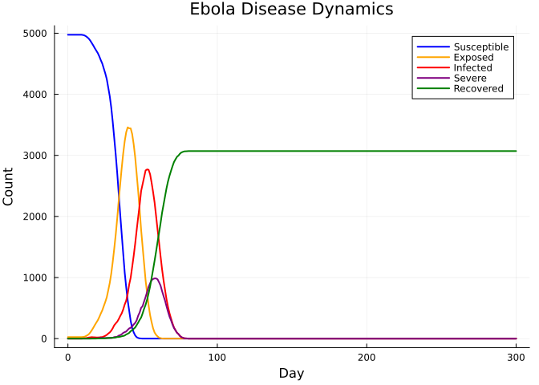
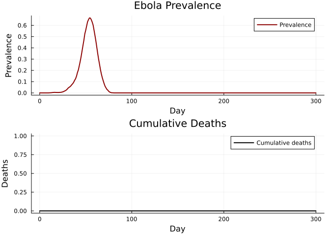

Ebola: Severity-Structured Disease
Simon Frost
- Overview
- Defining the Ebola disease
- Running the simulation
- Disease progression
- Deaths and case fatality
- Key metrics
- Summary
Overview
Ebola virus disease (EVD) features multi-stage severity progression and the unusual property of dead-body transmission — unsafe burials can amplify outbreaks. This vignette implements a severity-structured Ebola model following starsim_examples/diseases/ebola.py:
- Exposed → Symptomatic → Severe (70%) → Dead (55% of severe) / Recovered
- Unburied dead bodies transmit at 2.1× relative transmissibility
- Severe cases transmit at 2.2× relative transmissibility
Defining the Ebola disease
using Starsim
using Plots
using Random
mutable struct Ebola <: AbstractInfection
infection::InfectionData
# Disease states
exposed::StateVector{Bool, Vector{Bool}}
recovered::StateVector{Bool, Vector{Bool}}
severe::StateVector{Bool, Vector{Bool}}
buried::StateVector{Bool, Vector{Bool}}
# Timepoint states
ti_exposed::StateVector{Float64, Vector{Float64}}
ti_recovered::StateVector{Float64, Vector{Float64}}
ti_severe::StateVector{Float64, Vector{Float64}}
ti_dead::StateVector{Float64, Vector{Float64}}
ti_buried::StateVector{Float64, Vector{Float64}}
# Parameters (all durations in days)
dur_exp2symp::Float64
dur_symp2sev::Float64
dur_sev2dead::Float64
dur_dead2buried::Float64
dur_symp2rec::Float64
dur_sev2rec::Float64
p_sev::Float64
p_death::Float64
p_safe_bury::Float64
sev_factor::Float64
unburied_factor::Float64
rng::StableRNG
end
function Ebola(;
name::Symbol = :ebola,
init_prev = 0.005,
beta = 0.5,
dur_exp2symp = 12.7,
dur_symp2sev = 6.0,
dur_sev2dead = 1.5,
dur_dead2buried = 2.0,
dur_symp2rec = 10.0,
dur_sev2rec = 10.4,
p_sev = 0.7,
p_death = 0.55,
p_safe_bury = 0.25,
sev_factor = 2.2,
unburied_factor = 2.1,
)
inf = InfectionData(name; init_prev=init_prev, beta=beta, label="Ebola")
Ebola(inf,
BoolState(:exposed; default=false),
BoolState(:recovered; default=false),
BoolState(:severe; default=false),
BoolState(:buried; default=false),
FloatState(:ti_exposed; default=Inf),
FloatState(:ti_recovered; default=Inf),
FloatState(:ti_severe; default=Inf),
FloatState(:ti_dead_ebola; default=Inf),
FloatState(:ti_buried; default=Inf),
Float64(dur_exp2symp), Float64(dur_symp2sev),
Float64(dur_sev2dead), Float64(dur_dead2buried),
Float64(dur_symp2rec), Float64(dur_sev2rec),
Float64(p_sev), Float64(p_death), Float64(p_safe_bury),
Float64(sev_factor), Float64(unburied_factor),
StableRNG(0),
)
end
Starsim.disease_data(d::Ebola) = d.infection.dd
Starsim.module_data(d::Ebola) = d.infection.dd.mod
function Starsim.init_pre!(d::Ebola, sim)
md = module_data(d)
md.t = Timeline(start=sim.pars.start, stop=sim.pars.stop, dt=sim.pars.dt)
d.rng = StableRNG(hash(md.name) ⊻ sim.pars.rand_seed)
all_states = [d.infection.susceptible, d.infection.infected,
d.infection.ti_infected, d.infection.rel_sus,
d.infection.rel_trans, d.exposed, d.recovered,
d.severe, d.buried, d.ti_exposed, d.ti_recovered,
d.ti_severe, d.ti_dead, d.ti_buried]
for s in all_states
add_module_state!(sim.people, s)
end
validate_beta!(d, sim)
npts = md.t.npts
define_results!(d,
Result(:new_infections; npts=npts, label="New infections"),
Result(:n_susceptible; npts=npts, scale=false),
Result(:n_exposed; npts=npts, scale=false),
Result(:n_infected; npts=npts, scale=false),
Result(:n_severe; npts=npts, scale=false),
Result(:n_recovered; npts=npts, scale=false),
Result(:prevalence; npts=npts, scale=false),
Result(:new_deaths; npts=npts),
)
md.initialized = true
return d
end
function Starsim.validate_beta!(d::Ebola, sim)
dd = disease_data(d)
dt = sim.pars.dt
if dd.beta isa Real
for (name, _) in sim.networks
dd.beta_per_dt[name] = 1.0 - exp(-Float64(dd.beta) * dt)
end
end
return d
end
function Starsim.init_post!(d::Ebola, sim)
people = sim.people
active = people.auids.values
n = length(active)
n_infect = max(1, Int(round(d.infection.dd.init_prev * n)))
infect_uids = UIDs(active[randperm(d.rng, n)[1:min(n_infect, n)]])
for u in infect_uids.values
d.infection.susceptible.raw[u] = false
d.exposed.raw[u] = true
d.ti_exposed.raw[u] = 1.0
_set_ebola_prognosis!(d, u, 1)
end
return d
end
function _set_ebola_prognosis!(d::Ebola, uid::Int, ti::Int)
ti_f = Float64(ti)
d.infection.ti_infected.raw[uid] = ti_f + d.dur_exp2symp + randn(d.rng) * 2.0
if rand(d.rng) < d.p_sev
d.ti_severe.raw[uid] = d.infection.ti_infected.raw[uid] + d.dur_symp2sev + randn(d.rng) * 1.0
if rand(d.rng) < d.p_death
d.ti_dead.raw[uid] = d.ti_severe.raw[uid] + d.dur_sev2dead + randn(d.rng) * 0.5
if rand(d.rng) < d.p_safe_bury
d.ti_buried.raw[uid] = d.ti_dead.raw[uid] # immediate safe burial
else
d.ti_buried.raw[uid] = d.ti_dead.raw[uid] + d.dur_dead2buried + randn(d.rng) * 0.5
end
else
d.ti_recovered.raw[uid] = d.ti_severe.raw[uid] + d.dur_sev2rec + randn(d.rng) * 2.0
end
else
d.ti_recovered.raw[uid] = d.infection.ti_infected.raw[uid] + d.dur_symp2rec + randn(d.rng) * 2.0
end
return
end
function Starsim.step_state!(d::Ebola, sim)
ti = module_data(d).t.ti
for u in sim.people.auids.values
# Exposed -> infected
if d.exposed.raw[u] && d.infection.ti_infected.raw[u] <= ti
d.exposed.raw[u] = false
d.infection.infected.raw[u] = true
end
# Infected -> severe
if d.infection.infected.raw[u] && d.ti_severe.raw[u] <= ti
d.severe.raw[u] = true
end
# Infected -> recovered
if d.infection.infected.raw[u] && d.ti_recovered.raw[u] <= ti
d.infection.infected.raw[u] = false
d.recovered.raw[u] = true
end
# Severe -> recovered
if d.severe.raw[u] && d.ti_recovered.raw[u] <= ti
d.severe.raw[u] = false
d.recovered.raw[u] = true
end
# Deaths
if d.ti_dead.raw[u] <= ti && d.ti_dead.raw[u] != Inf
request_death!(sim.people, UIDs([u]), ti)
end
# Burial
if d.ti_buried.raw[u] <= ti
d.buried.raw[u] = true
end
# Update rel_trans for severity and unburied dead
if d.severe.raw[u]
d.infection.rel_trans.raw[u] = d.sev_factor
end
if d.ti_dead.raw[u] <= ti && d.ti_buried.raw[u] > ti
d.infection.rel_trans.raw[u] = d.unburied_factor
end
end
return d
end
function Starsim.set_prognoses!(d::Ebola, target::Int, source::Int, sim)
ti = module_data(d).t.ti
d.infection.susceptible.raw[target] = false
d.exposed.raw[target] = true
d.ti_exposed.raw[target] = Float64(ti)
_set_ebola_prognosis!(d, target, ti)
push!(d.infection.infection_sources, (target, source, ti))
return
end
function Starsim.step!(d::Ebola, sim)
md = module_data(d)
ti = md.t.ti
dd = disease_data(d)
new_infections = 0
for (net_name, net) in sim.networks
edges = network_edges(net)
isempty(edges) && continue
beta_dt = get(dd.beta_per_dt, net_name, 0.0)
beta_dt == 0.0 && continue
p1 = edges.p1; p2 = edges.p2; eb = edges.beta
inf_raw = d.infection.infected.raw
sus_raw = d.infection.susceptible.raw
rt_raw = d.infection.rel_trans.raw
rs_raw = d.infection.rel_sus.raw
@inbounds for i in 1:length(edges)
src, trg = p1[i], p2[i]
if inf_raw[src] && sus_raw[trg]
p = rt_raw[src] * rs_raw[trg] * beta_dt * eb[i]
if rand(d.rng) < p
set_prognoses!(d, trg, src, sim)
new_infections += 1
end
end
if inf_raw[trg] && sus_raw[src]
p = rt_raw[trg] * rs_raw[src] * beta_dt * eb[i]
if rand(d.rng) < p
set_prognoses!(d, src, trg, sim)
new_infections += 1
end
end
end
end
return new_infections
end
function Starsim.step_die!(d::Ebola, death_uids::UIDs)
d.infection.susceptible[death_uids] = false
d.infection.infected[death_uids] = false
d.exposed[death_uids] = false
d.severe[death_uids] = false
d.recovered[death_uids] = false
return d
end
function Starsim.update_results!(d::Ebola, sim)
md = module_data(d)
ti = md.t.ti
ti > length(md.results[:n_susceptible].values) && return d
active = sim.people.auids.values
n_sus = 0; n_exp = 0; n_inf = 0; n_sev = 0; n_rec = 0; n_dead = 0
@inbounds for u in active
n_sus += d.infection.susceptible.raw[u]
n_exp += d.exposed.raw[u]
n_inf += d.infection.infected.raw[u]
n_sev += d.severe.raw[u]
n_rec += d.recovered.raw[u]
if d.ti_dead.raw[u] == Float64(ti) && d.ti_dead.raw[u] != Inf
n_dead += 1
end
end
n_total = Float64(length(active))
md.results[:n_susceptible][ti] = Float64(n_sus)
md.results[:n_exposed][ti] = Float64(n_exp)
md.results[:n_infected][ti] = Float64(n_inf)
md.results[:n_severe][ti] = Float64(n_sev)
md.results[:n_recovered][ti] = Float64(n_rec)
md.results[:prevalence][ti] = n_total > 0 ? n_inf / n_total : 0.0
md.results[:new_deaths][ti] = Float64(n_dead)
return d
end
function Starsim.finalize!(d::Ebola)
md = module_data(d)
for (target, source, ti) in d.infection.infection_sources
if ti > 0 && ti <= length(md.results[:new_infections].values)
md.results[:new_infections][ti] += 1.0
end
end
return d
endRunning the simulation
sim = Sim(
n_agents = 5_000,
networks = RandomNet(n_contacts=5),
diseases = Ebola(beta=0.5),
dt = 1.0,
stop = 300.0,
rand_seed = 42,
verbose = 0,
)
run!(sim)Sim(5000 agents, 0.0→300.0, dt=1.0, nets=1, dis=1, status=complete)Disease progression
n_sus = get_result(sim, :ebola, :n_susceptible)
n_exp = get_result(sim, :ebola, :n_exposed)
n_inf = get_result(sim, :ebola, :n_infected)
n_sev = get_result(sim, :ebola, :n_severe)
n_rec = get_result(sim, :ebola, :n_recovered)
tvec = 0:length(n_sus)-1
plot(tvec, n_sus, label="Susceptible", lw=2, color=:blue)
plot!(tvec, n_exp, label="Exposed", lw=2, color=:orange)
plot!(tvec, n_inf, label="Infected", lw=2, color=:red)
plot!(tvec, n_sev, label="Severe", lw=2, color=:purple)
plot!(tvec, n_rec, label="Recovered", lw=2, color=:green)
xlabel!("Day")
ylabel!("Count")
title!("Ebola Disease Dynamics")
Deaths and case fatality
new_deaths = get_result(sim, :ebola, :new_deaths)
prev = get_result(sim, :ebola, :prevalence)
p1 = plot(tvec, prev, lw=2, color=:darkred, label="Prevalence")
ylabel!("Prevalence")
p2 = plot(tvec, cumsum(new_deaths), lw=2, color=:black, label="Cumulative deaths")
ylabel!("Deaths")
plot(p1, p2, layout=(2, 1), xlabel="Day",
title=["Ebola Prevalence" "Cumulative Deaths"])
Key metrics
println("Peak prevalence: $(round(maximum(prev), digits=4))")
println("Peak day: $(argmax(prev))")
println("Total deaths: $(Int(sum(new_deaths)))")
println("Final recovered: $(Int(n_rec[end]))")
cfr = sum(new_deaths) / (sum(new_deaths) + n_rec[end])
println("Observed CFR: $(round(cfr, digits=3))")Peak prevalence: 0.6655
Peak day: 55
Total deaths: 0
Final recovered: 3071
Observed CFR: 0.0Summary
- Ebola’s multi-stage severity progression captures the clinical pathway (exposure → symptoms → severe → death or recovery)
- Dead-body transmission via unsafe burials amplifies the epidemic, with unburied bodies transmitting at 2.1× the base rate
- Severe cases also transmit more efficiently (2.2×), creating a positive feedback during the peak
- Safe burial interventions (
p_safe_bury) directly reduce this amplification